Die folgenden Objekte sind maskiert von 'package:stats':
filter, lag
Die folgenden Objekte sind maskiert von 'package:base':
intersect, setdiff, setequal, union
library("sf")
Linking to GEOS 3.9.3, GDAL 3.5.2, PROJ 8.2.1; sf_use_s2() is TRUE
library(treemapify)library(ggmosaic)
Daten einlesen
# Daten von Stefan (ab 29.04.2023)stefan <-read_delim("posmo_Stefan_23-05-03_06-21.csv", delim =",")
Rows: 50487 Columns: 7
── Column specification ────────────────────────────────────────────────────────
Delimiter: ","
chr (4): user_id, weekday, place_name, transport_mode
dbl (2): lon_x, lat_y
dttm (1): datetime
ℹ Use `spec()` to retrieve the full column specification for this data.
ℹ Specify the column types or set `show_col_types = FALSE` to quiet this message.
stefan$person <-"Stefan"# Daten von Miriam (ab xx.05.2023)miriam <-read_delim("posmo_Miriam_23-05-03_06-21.csv", delim =",")
Rows: 36457 Columns: 7
── Column specification ────────────────────────────────────────────────────────
Delimiter: ","
chr (4): user_id, weekday, place_name, transport_mode
dbl (2): lon_x, lat_y
dttm (1): datetime
ℹ Use `spec()` to retrieve the full column specification for this data.
ℹ Specify the column types or set `show_col_types = FALSE` to quiet this message.
miriam$person <-"Miriam"# Schweizergrenze für Visualisierungschweiz <-read_sf("schweiz.gpkg")# Daten zusammenführenposmo <-rbind(stefan, miriam)# nicht relevante Spalten entfernenposmo <- posmo |>select(-user_id, -weekday, -place_name)# NA finden & entfernenposmo[!complete.cases(posmo), ] # Zeigt Zeilen mit NA an
# A tibble: 999 × 5
datetime transport_mode lon_x lat_y person
<dttm> <chr> <dbl> <dbl> <chr>
1 2023-05-02 22:00:00 <NA> 8.70 47.1 Stefan
2 2023-05-03 03:25:11 <NA> 8.70 47.1 Stefan
3 2023-05-03 04:52:23 <NA> 8.70 47.1 Stefan
4 2023-05-03 05:47:14 <NA> 8.72 47.1 Stefan
5 2023-05-03 06:06:45 <NA> 8.74 47.1 Stefan
6 2023-05-03 06:45:46 <NA> 8.69 47.2 Stefan
7 2023-05-03 06:49:17 <NA> 8.70 47.2 Stefan
8 2023-05-03 11:59:45 <NA> 8.71 47.2 Stefan
9 2023-05-03 12:41:15 <NA> 8.67 47.2 Stefan
10 2023-05-03 13:02:35 <NA> 8.68 47.2 Stefan
# … with 989 more rows
posmo <-drop_na(posmo)# Spalten mit NA entfernen# Geometrie hinzufügenposmo <- posmo |>st_as_sf(coords =c("lon_x", "lat_y"), crs =4326, remove =FALSE) |># Geometrie hinzufügenst_transform(2056) # transformieren CH1903+ LV95: 2056# Schweizer Koordinaten zu sf-Tabelle hinzufügenposmo_coordinates <-st_coordinates(posmo)posmo <-cbind(posmo, posmo_coordinates)# WGS Koordinaten entfernen posmo <- posmo |>select(-lon_x, -lat_y)# Daten anschauenggplot(posmo, aes(X, Y, color = person))+geom_path()+coord_equal()+scale_color_manual(values =c("Miriam"="#3182bd", "Stefan"="#c51b8a"))+theme_void()
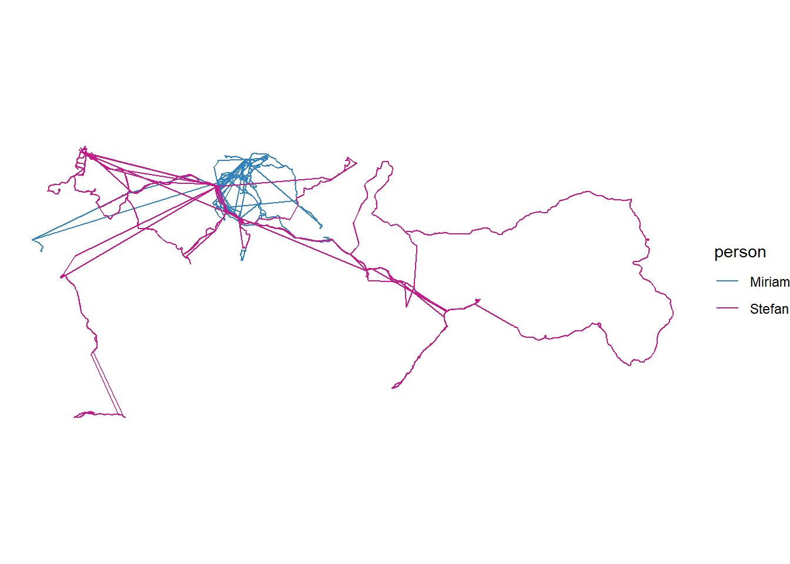
posmo_filtered <- posmo |># nur posmo daten innerhalb Rechteck um schweizst_crop(st_as_sfc(st_bbox(schweiz)))
Warning: attribute variables are assumed to be spatially constant throughout all
geometries
# posmo_clipped <- st_intersection(posmo, schweiz) # nur posmo daten innerhalb von schweiz, geht lange...ggplot()+geom_sf(data = schweiz, fill=NA)+geom_sf(data = posmo_filtered, aes(colour = person))+scale_color_manual(values =c("Miriam"="#3182bd", "Stefan"="#c51b8a"))+theme_void() # Achsen und Raster verschwinden
Vorgehen “Geschwindigkeit”
Geschwindigkeit
# Geschwindigkeit herausfindenposmo1 <- posmo |># Zeitmutate(time =as.numeric(difftime(lead(datetime), datetime, units ="secs")) # secs ) # Hier gibt es manchmal 0er, also Datenpunkte zur selben Zeit. Die müssten auch selbe Koordinaten haben und sind für Geschwindigkeitsrechnung nicht zu gebrauchen. Also weg damit... # Hier muss "lead" anstatt "lag" benutzt werdenposmo1 <- posmo1 |># time = 0 entfernenmutate(time =ifelse(time ==0, NA, time)) |>drop_na()posmo1 <- posmo1 |>mutate(steplength =round(sqrt((lead(X,1)-X)^2+(lead(Y,1)-Y)^2),1), # metervelocity =round((steplength/1000)/(time/60/60),1) # km/h )
Moving Window
Brauchen wir das Moving Window überhaupt??? anfänglich gedacht um Daten zu “glätten”, eventuell nützlich, um ausreisser zu finden? Fazit: Wir brauchen einen klaren Schnitt zwischen slow & fast, also ist das moving window nicht nützlich
# Geschwindigkeitsunterschied zu 2 Punkte vor und 2 Punkte nach Betrachtung# movwin <- posmo1 |> # mutate(# n_plus1 = sqrt((lead(velocity,1)-velocity)^2),# n_plus2 = sqrt((lead(velocity,2)-velocity)^2),# n_minus1 = sqrt((lag(velocity,1)-velocity)^2),# n_minus2 = sqrt((lag(velocity,2)-velocity)^2),# )# velocityMean der 4 Distanzen erstellen# movwin <- movwin |> # # rowwise() |> # mutate(velocityMean = mean(c(n_minus1, n_minus2, n_plus1, n_plus2), na.rm = TRUE)) |> # ungroup()
Einteilung stay/slow/fast
# Erfahrungswerte:# Stefans Weg zum Bahnhof mit dem Fahrrad, maximale Geschwindigkeit:# 29.04.2023 09:09:40: 43.0 km/h# 08.05.2023 14:35:29: 36.0 km/h# Miriams Bus:# Bsp. 35 km/h# Miriam rennt zum Bus# Bsp. 17 km/h# Schwellenwert setzen slow/fast, velocity: slow < 45 km/h <= fast# Schwellenwert setzen stay, time: stay >= 600 (10 min) # ACHTUNG: Wenn jemand länger als Schwellenwert wartet, wird dies nicht als Reisestart gefunden.posmo1 <- posmo1 |>mutate(velocity_text =ifelse(velocity <45, "slow", "fast"))posmo1$velocity_text[posmo1$time >=600] <-"stay"# Ausreisser entfernen# Mir ist nur derjenige vom 2023-04-29 09:43:01 aufgefallen...# Wie kann ich dieses Problem alternativ angegangen werden???# Vorgehen 1: Alle Punkte welche plötzlich einen Geschwindigkeitsunterschied von 30 km/h als benachbarte Punkte aufweisen, werden gelöscht# posmo1$ausreisser[# sqrt((posmo1$velocity-lag(posmo1$velocity))^2) > 30 & # sqrt((posmo1$velocity-lead(posmo1$velocity))^2) > 30# ] <- "NA"# Fazit: nun gibt es bei jeder Beschleunigung einen Ausreisser, also nicht geeignet# Vorgehen 2: Alle Punkte, welche in velocity_text von den direkten Nachbarn abweichen werden als Ausreisser markiert, stay ist davon ausgenommen# posmo1$ausreisser[# posmo1$velocity_text != lag(posmo1$velocity_text) & # posmo1$velocity_text != lead(posmo1$velocity_text) &# posmo1$velocity_text != "stay"# ] <- "NA" # Fazit: hier werden kurze Bahn/Busstrecken weggelöschen, bei welcher die Geschwindigkeit immer um den Schwellenwert slow/fast liegt. Für die Auswertung ist dies etwa gleich Schlimm wie Vorgehen 1 (oder???)# Fazit Vorgehen 1&2: durch die Vorgehen gehen mehr korrekte Daten verloren als Ausreisser. Insgesamt habe ich nur einen Ausreisser gefunden.# Vorgehen 3: weiter unten werden durch die Suche von Abfolge stay-slow-slow-fast-fast Aussreiser entfernt. Bzw. sie würden Startpunkte verbergen. Annahme: wir haben eine genügend grosse Stichprobengrösse, dass das wegfallen von Reisestartpunkten keine Rolle spielt. Somit hat sich die Suche nach Ausreissern erledigt.
Evente finden
# Event finden (stay-slow-fast), event_id# Start und Enpunkte von Segment mit TRUE markierenevent <- posmo1 |>mutate(find =ifelse( velocity_text !=lead(velocity_text) | velocity_text !=lag(velocity_text) , TRUE, NA))# Nur Start und Enpunkte von Segment behaltenevent <-drop_na(event)event <- event |>select(-find) # unnötige Spalten entfernen# Abfolge stay-slow-slow-fast-fast finden, so werden auch Ausreisser eliminiertevent <- event |># Start der Abfolge finden, TRUEmutate(find =ifelse( velocity_text =="stay"&lead(velocity_text, 1) =="slow"&lead(velocity_text, 2) =="slow"&lead(velocity_text, 3) =="fast"&lead(velocity_text, 4) =="fast" , TRUE, NA))# nur Start Wartezeit und Ende Wartezeit behaltenevent <- event |># nur Ende slow (= Start Wartezeit) und Start fast (= Ende Wartezeit) markierenmutate(find =ifelse(lag(find, 2) ==TRUE|lag(find, 3) ==TRUE , TRUE, NA))event <-drop_na(event) # nur Start & Ende Wartezeit behalten behaltenevent <- event |>select(-find) # unnötige Spalten entfernen# Standort des Events bestimmenevent <- event |>mutate(haltestelle_x =ifelse( velocity_text =="slow" , X, lag(X)))event <- event |>mutate(haltestelle_y =ifelse( velocity_text =="slow" , Y, lag(Y)))event <-st_drop_geometry(event) # Alte Geometrie entfernenevent <- event |>select(-X, -Y, -time, -steplength, -velocity) # unnötige Spalten entfernen# pro event eine Spalte (wide format pro event)# FEHLER: wide <- pivot_wider(event, names_from = "velocity_text", values_from = "datetime") # Hier funktioniert etwas mit dem Datenformat nicht??? Vielleicht mit Join???slow <- event |>subset(velocity_text =="slow") # Tabelle slowfast <- event |>subset(velocity_text =="fast") # Tabelle fast# FEHLER: join <- left_join(slow, fast, "haltestelle_y", suffix = c("_slow", "_fast")) #Hier funktioniert etwas noch nicht??? Vielleicht ID gebenslow$id <-as.character(1:nrow(slow)) # idfast$id <-as.character(1:nrow(slow)) # idevent <-left_join(slow, fast, "id", suffix =c("_slow", "_fast"))event <- event |># checken, ob standorte gleich sind (ob id richtig verteilt wurden)mutate(check =ifelse( haltestelle_x_slow == haltestelle_x_fast & haltestelle_y_slow == haltestelle_y_fast , TRUE, NA))event[!complete.cases(event), ] # alle id richtig
[1] datetime_slow transport_mode_slow person_slow
[4] velocity_text_slow haltestelle_x_slow haltestelle_y_slow
[7] id datetime_fast transport_mode_fast
[10] person_fast velocity_text_fast haltestelle_x_fast
[13] haltestelle_y_fast check
<0 Zeilen> (oder row.names mit Länge 0)
# Bahnhöfe einlesenhaltestelle <-read_delim("haltestellen-oev_2056_de.csv/Betriebspunkt.csv", delim =",") # WArum funktioniert das plötzlich nicht mehr??? File neu herunterladen!
Warning: One or more parsing issues, call `problems()` on your data frame for details,
e.g.:
dat <- vroom(...)
problems(dat)
Rows: 28385 Columns: 19
── Column specification ────────────────────────────────────────────────────────
Delimiter: ","
chr (9): xtf_id, Name, Abkuerzung, Transportunternehmen_Abkuerzung, Betriebs...
dbl (8): Nummer, Transportunternehmen_Nummer, Gemeinde_Nummer, Gueltigkeit_B...
lgl (2): Gueltigkeit_EndeGueltigkeit, rUebergeordneteHaltestelle
ℹ Use `spec()` to retrieve the full column specification for this data.
ℹ Specify the column types or set `show_col_types = FALSE` to quiet this message.
# Buffer um Bahnhofhaltestelle_buffer <-st_buffer(haltestelle, 100) # Was ist eine gute Buffer-Grösse???# Intersect Buffer mit Eventhaltestelle_event <-st_intersection(haltestelle_buffer, event)
Warning: attribute variables are assumed to be spatially constant throughout all
geometries
# wartezeit pro Event: difftime(max(Segmentslow), min(segmentfast)velocity <- haltestelle_event |>mutate(wartezeit =round(as.numeric(difftime(ende_warten, start_warten, units ="mins")),2)) # ich glaube, die Daten sind nicht so gut...# Spalte mit Kategorie der Wartezeit hinzufügenvelocity$wartezeit_cat <-"NA"velocity$wartezeit_cat[velocity$wartezeit >=0& velocity$wartezeit <1] <-"0-1"velocity$wartezeit_cat[velocity$wartezeit >=1& velocity$wartezeit <2] <-"1-2"velocity$wartezeit_cat[velocity$wartezeit >=2& velocity$wartezeit <3] <-"2-3"velocity$wartezeit_cat[velocity$wartezeit >=3& velocity$wartezeit <4] <-"3-4"velocity$wartezeit_cat[velocity$wartezeit >=4& velocity$wartezeit <5] <-"4-5"velocity$wartezeit_cat[velocity$wartezeit >=5& velocity$wartezeit <6] <-"5-6"velocity$wartezeit_cat[velocity$wartezeit >=6& velocity$wartezeit <7] <-"6-7"velocity$wartezeit_cat[velocity$wartezeit >=7& velocity$wartezeit <8] <-"7-8"velocity$wartezeit_cat[velocity$wartezeit >=8& velocity$wartezeit <9] <-"8-9"velocity$wartezeit_cat[velocity$wartezeit >=9& velocity$wartezeit <10] <-"9-10"
Visualisierung
# Visualisierung: Wo wurde gewartetggplot(velocity)+geom_sf(data = schweiz)+geom_sf()+theme_void() # Achsen und Raster verschwinden
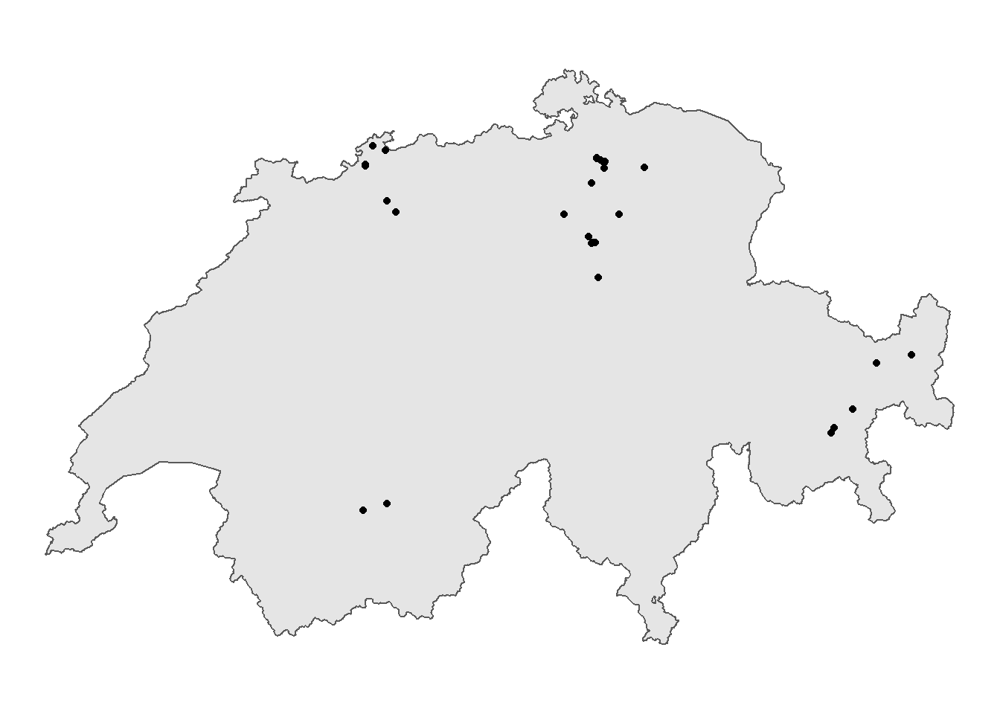
# Visualisierung: Wer hat wo gewartetggplot(velocity)+geom_sf(data = schweiz)+geom_sf(aes(colour = person))+scale_color_manual(values =c("Miriam"="#3182bd", "Stefan"="#c51b8a"))+theme_void() # Achsen und Raster verschwinden
ggplot(velocity, aes(wartezeit, person))+geom_boxplot()+# Warum hat es keine Whiskers???labs( # Beschriftung aenderntitle ="Wartezeiten beim Vorgehen ", x ="Wartezeit [min]", y ="Person")+# Legende beschriftencoord_flip() +theme_classic() # löscht ggplot-Layout
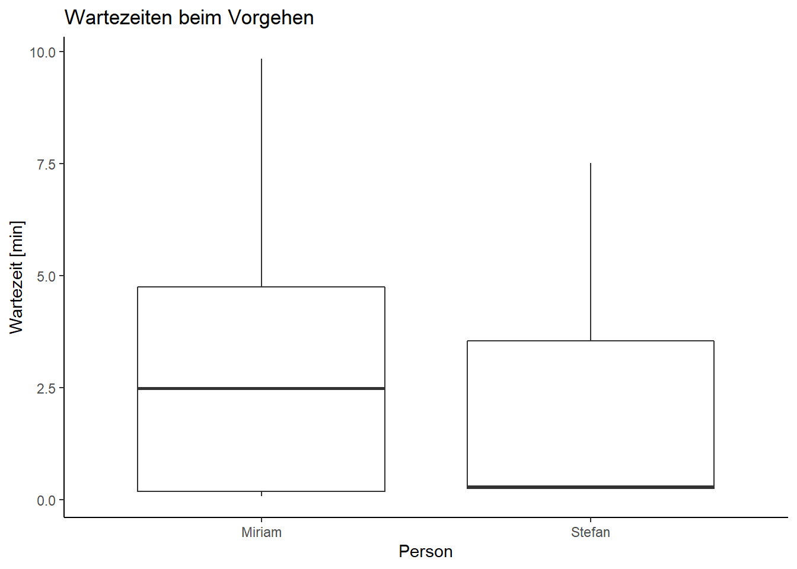
t.test(wartezeit~person, data = velocity, var.equal =TRUE)# ungepaart, zweiseitig, long-Format
Two Sample t-test
data: wartezeit by person
t = 1.6571, df = 58, p-value = 0.1029
alternative hypothesis: true difference in means between group Miriam and group Stefan is not equal to 0
95 percent confidence interval:
-0.2263252 2.4030109
sample estimates:
mean in group Miriam mean in group Stefan
3.005200 1.916857
# violin plot (sagt nicht mehr aus als Säulen, oder?)ggplot(velocity, aes(wartezeit, person, fill = person))+geom_violin(scale ="count")+coord_flip() +labs( # Beschriftung aenderntitle ="Wartezeiten", x ="Wartezeit [min]", y ="Person")+# Legende beschriftenscale_fill_manual(values =c("Miriam"="#3182bd", "Stefan"="#c51b8a"))+theme_classic() # löscht ggplot-Layout
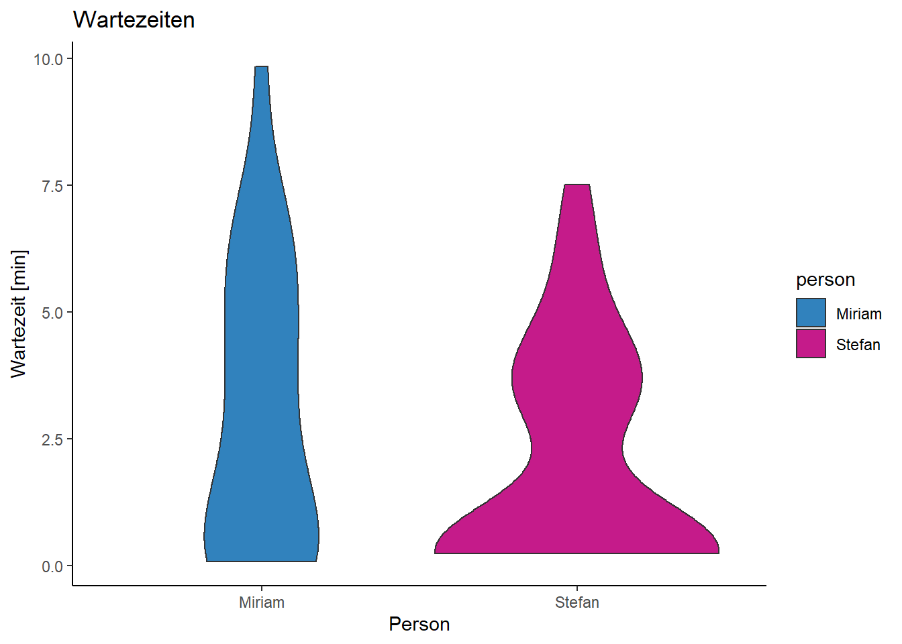
# Boxplot mit Haltestelle (nur sinnvoll mit viel benutzen Haltestellen...)ggplot(velocity, aes(wartezeit, Name))+geom_boxplot()+coord_flip() +labs( # Beschriftung aenderntitle ="Wartezeiten beim Vorgehen velocity", x ="Person", y ="Wartezeit [min]")+# Legende beschriftentheme_classic() # löscht ggplot-Layout
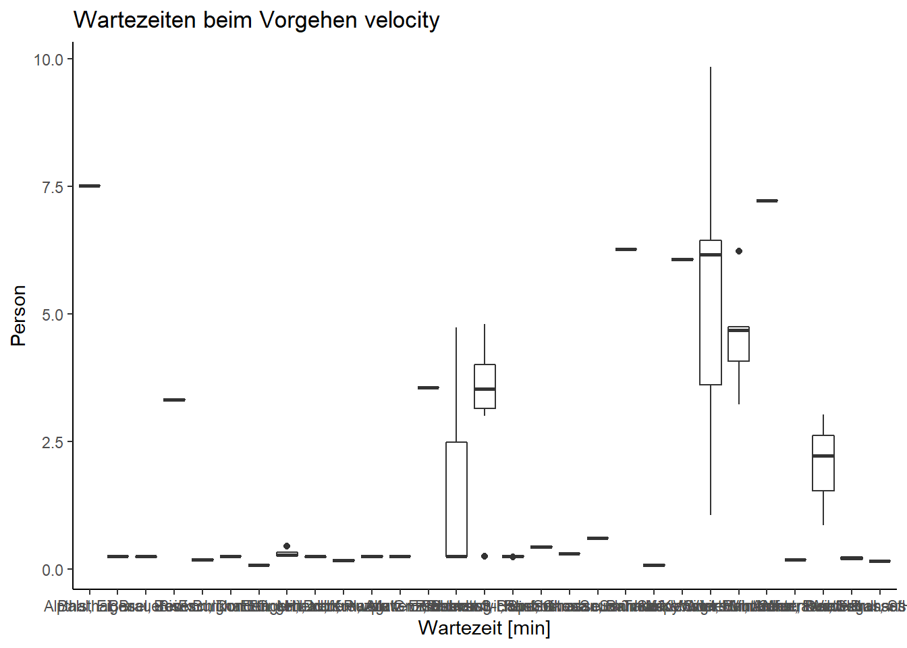
boxplot(wartezeit~Name, data = velocity)
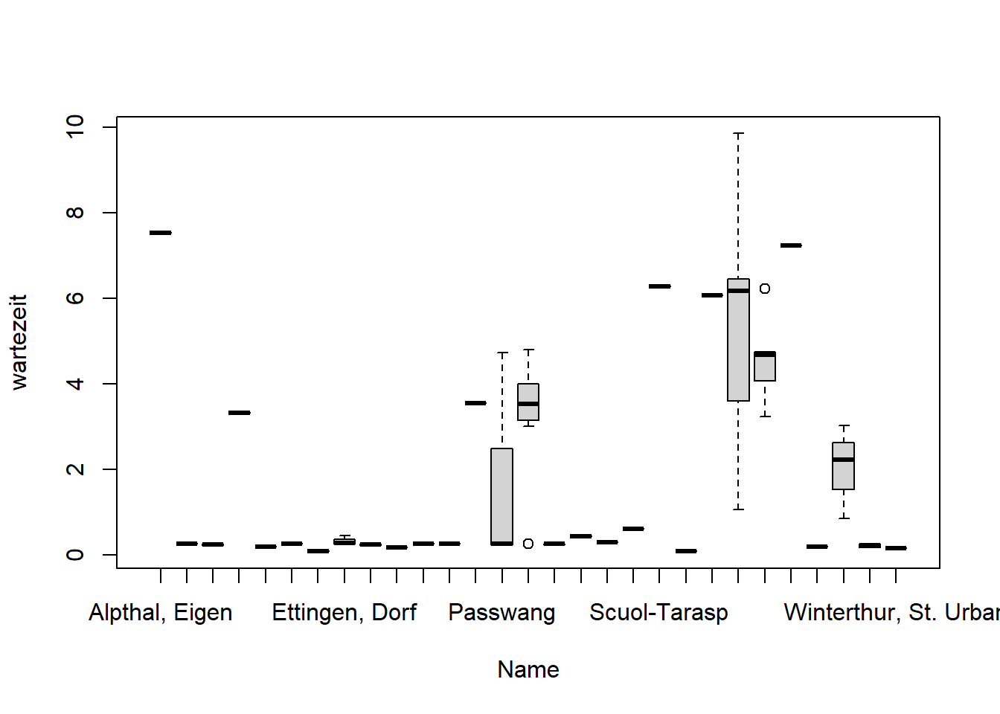
# Karte mit Punkt pro Haltestelle, Punktgrösse gibt Mean Wartezeit an, evtl noch eine Nummer mit Anzahl Events neben Punkt.velocity_sum <- velocity |>group_by(Name) |># group_by(Spalte_gruppieren1, Spalte_gruppieren2)summarise(Mean =mean(wartezeit), Anzahl =length(wartezeit))ggplot(velocity_sum)+geom_sf(data = schweiz)+geom_sf(aes(size = Mean, colour = Anzahl))+theme_void() # Achsen und Raster verschwinden
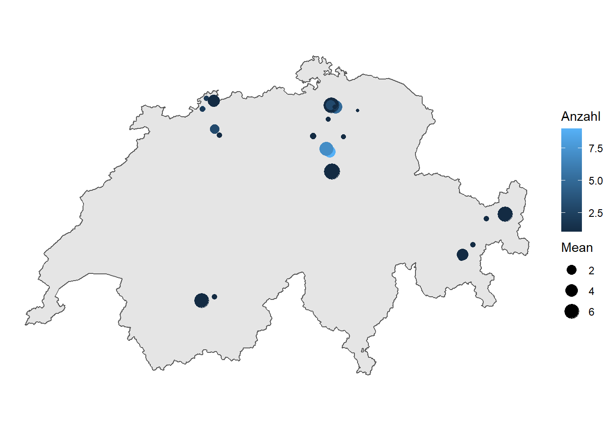
# Interaktive Karte -> Miriam ist dran# Farbige Säulen pro Person, Anteil von 0-1 min, 1-2 min,...ggplot(velocity, aes(person, fill = wartezeit_cat))+geom_bar(position =position_fill(reverse =TRUE))+scale_fill_manual(values =rev(RColorBrewer::brewer.pal(10, "YlGn")))+labs(title ="Vorgehen Geschwindigkeit", # Titel setzenx ="Person", y ="Anteil der Events", # Achsen beschriftenfill ="Wartezeit [Min]")+# Legende beschriftenscale_y_continuous( # y-Achse anpassen,limits =c(0, 1.05), # Limits setzenbreaks =c(0.00, 0.25, 0.50, 0.75, 1.00))+# Achsenabschnitte festlegengeom_text(x=1, y=1.05, label="n = 25")+geom_text(x=2, y=1.05, label="n = 35")+theme_classic() # löscht ggplot-Layout
Warning in RColorBrewer::brewer.pal(10, "YlGn"): n too large, allowed maximum for palette YlGn is 9
Returning the palette you asked for with that many colors
# Mosaic plot: Miriam vs. Stefan mit wartezeit_catggplot() +geom_mosaic(data = velocity, aes(x =product(wartezeit_cat), fill= person),show.legend =FALSE) +theme_mosaic()+scale_fill_manual(values =c("Miriam"="#3182bd", "Stefan"="#c51b8a"))+labs(title ="Vergleich der Wartezeiten", # Titel setzeny ="Person", x ="Wartezeit [min]")+# Achsen beschriftentheme_classic() # löscht ggplot-Layout
Warning: `unite_()` was deprecated in tidyr 1.2.0.
ℹ Please use `unite()` instead.
ℹ The deprecated feature was likely used in the ggmosaic package.
Please report the issue at <https://github.com/haleyjeppson/ggmosaic>.
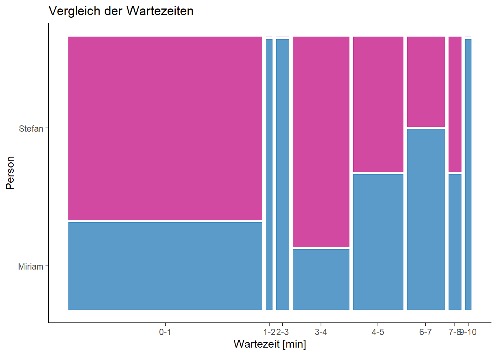
Vorgehen “Transportmodus”
Einteilung stay/slow/public
# Zeitdauer herausfindenposmo2 <- posmo |># Zeitmutate(time =as.numeric(difftime(lead(datetime), datetime, units ="secs")) # secs ) # Hier gibt es manchmal 0er, also Datenpunkte zur selben Zeit. Die müssten auch selbe Koordinaten haben und sind für Geschwindigkeitsrechnung nicht zu gebrauchen. Also weg damit... # Hier muss "lead" anstatt "lag" benutzt werdenposmo2 <- posmo2 |># time = 0 entfernenmutate(time =ifelse(time ==0, NA, time)) |>drop_na()# Schwellenwert setzen stay, time: stay >= 600 (10 min) # Schwellenwert evtl. nach oben setzen, da Stefan mal 40 min auf Zug wartete - Wenn jemand länger als Schwellenwert wartet, wird dies nicht als Reisestart gefunden.#neue Spalte "Moving", neuer Wert "Stay", sonst alle anderen Transportmittel beibehaltenposmo2 <- posmo2 |>mutate(Moving =ifelse(time >=600, "Stay", transport_mode))#Umbenennen/einteilen der Transportmittel, Public: Boat, Bus, Train, Tram.Slow: Bike, Walk. Stay: stay. Alles andere: otherposmo2 <- posmo2 %>%mutate(moving_class =case_when( Moving =="Bus"~"public", Moving =="Train"~"public", Moving =="Tram"~"public", Moving =="Boat"~"public", Moving =="Walk"~"slow", Moving =="Bike"~"slow", Moving =="Stay"~"stay",TRUE~"other" ))
Evente finden
#Abfolge, Stay, Walk/Bike, Bus/Train/Tram# Start und Enpunkte von Segment mit TRUE markierenevent <- posmo2 |>mutate(find=ifelse( moving_class !=lead(moving_class) | moving_class !=lag(moving_class) , TRUE, NA))# Nur Start und Enpunkte von Segment behaltenevent <-drop_na(event)event <- event |>select(-find) # unnötige Spalten entfernen# Abfolge stay-slow-slow-fast-fast finden, so werden auch Ausreisser eliminiertevent <- event |># Start der Abfolge finden, TRUEmutate(find =ifelse( moving_class =="stay"&lead(moving_class, 1) =="slow"&lead(moving_class, 2) =="slow"&lead(moving_class, 3) =="public"&lead(moving_class, 4) =="public" , TRUE, NA))# nur Start Wartezeit und Ende Wartezeit behaltenevent <- event |># nur Ende slow (= Start Wartezeit) und Start fast (= Ende Wartezeit) markierenmutate(find =ifelse(lag(find, 2) ==TRUE|lag(find, 3) ==TRUE , TRUE, NA))event <-drop_na(event) # nur Start & Ende Wartezeit behalten behaltenevent <- event |>select(-find) # unnötige Spalten entfernen#vorbereitung für left_join, darf keine versch Geometrien in den zu kombinierenden tables habenevent <-st_drop_geometry(event) # Alte Geometrie entfernen##separate tables machen, slow und public, dann left_join, unnötige spalten entfernen (start und endzeiten behalten)slow <- event |>subset(moving_class =="slow") # Tabelle slowpublic<-event |>subset(moving_class =="public") #Tabelle public#left join, via hinzugefügter idslow$id <-as.character(1:nrow(slow)) # idpublic$id <-as.character(1:nrow(slow)) # idevent <-left_join(slow,public,"id", suffix =c("_slow", "_public"))#unnötige Spalten entfernen, verbleibende umbenennennames(event)
#Haltestellen abbilden Karte# Daten anschauen, ausprobierenggplot(event, aes(E, N, color = person))+geom_point()+geom_path()+coord_equal()+theme_void()
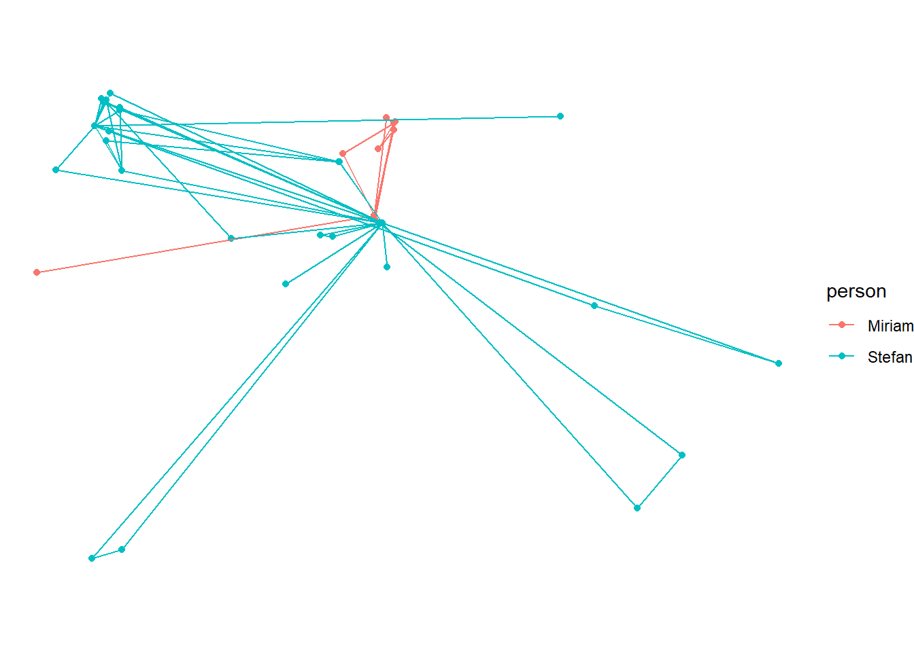
ggplot(event, aes(E, N, color=person))+geom_point()
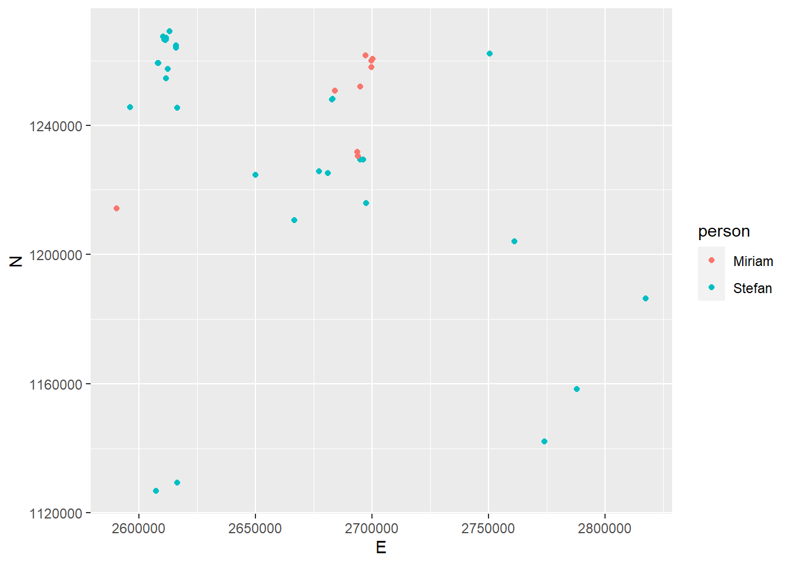
###Abbildungen, Auswertungenmean(event$wartezeit_minutes) # Mittelwert über beide Perosnen
[1] 2.881176
aggregate(event$wartezeit_minutes, list(event$person), FUN=mean) #Mittelwert pro Person
Group.1 x
1 Miriam 3.316162
2 Stefan 2.605128
aggregate(event$wartezeit_minutes, list(event$person), FUN=max) #Maximalwert pro Person
Group.1 x
1 Miriam 8.35
2 Stefan 9.65
aggregate(event$wartezeit_minutes, list(event$person), FUN=min) #Minimalwert pro Person
Group.1 x
1 Miriam 0.01666667
2 Stefan 0.03333333
summary(event$wartezeit_minutes)
Min. 1st Qu. Median Mean 3rd Qu. Max.
0.01667 0.16667 3.00000 2.88118 5.01667 9.65000
hist(event$wartezeit_minutes) #Histogram insgesamt
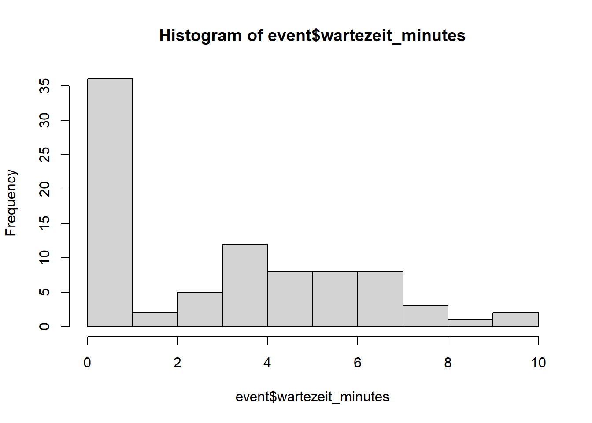
boxplot(event$wartezeit_minutes) #Boxplot insgesamt
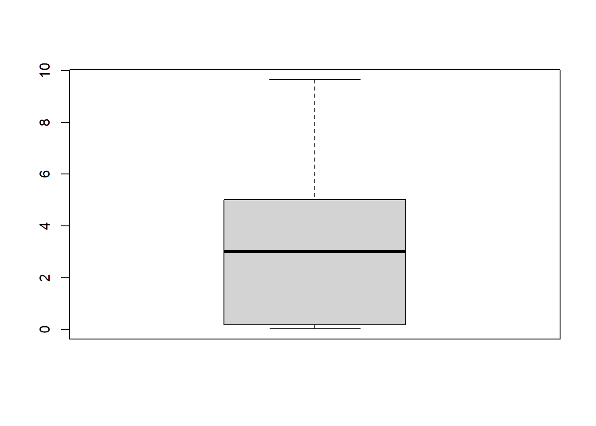
ggplot(event, aes(y = wartezeit_minutes, x = person)) +geom_boxplot(fill=c("lightblue", "lightgreen")) # 2 Boxplots nach Personen
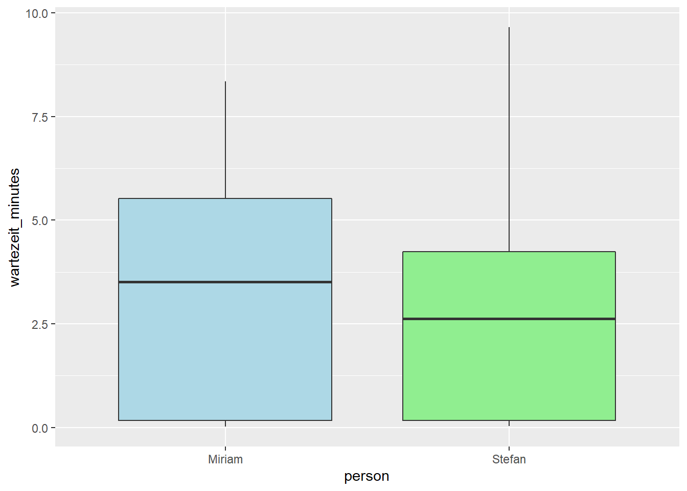
ggplot(event, aes(y = wartezeit_minutes, x = person)) +geom_count() # Häufigkeit der Wartezeit-Werte nach Personen
p <- event |>select(wartezeit_minutes, person) |>ggplot(mapping =aes(x = wartezeit_minutes, fill = person)) +geom_histogram(binwidth =5,position ="dodge" )##################ausprobiert, jedoch noch nicht vollständig#Hintergrundkarte einfügen, CH 1:500'000#?Wie Haltestellen in Rasterkarte???#library("terra")#CH<- terra::rast("swiss-map-raster500_2022_500_komb_25_2056.tif")#plot(CH)#Interaktive Karte einfügenlibrary(leaflet)m <-leaflet() %>%addTiles() %>%setView( lng =2.34, lat =48.85, zoom =5 ) %>%addProviderTiles("NASAGIBS.ViirsEarthAtNight2012")m
#WGS Koordinaten für leaflet Karte wieder hinzufügen# WGS Geometrie hinzufügeneventWGS <- event |>st_as_sf(coords =c("E", "N"), crs =2056, remove =FALSE) |># Geometrie hinzufügenst_transform(4326) # transformieren von CH1903+ LV95 nach WGS: 2056 ->4326# WGS Koordinaten zu sf-Tabelle hinzufügeneventWGS_coordinates <-st_coordinates(eventWGS)eventWGS <-cbind(eventWGS, eventWGS_coordinates)#Circles in leafletMapleaflet(eventWGS) %>%addTiles() %>%addCircleMarkers(lng =~X, lat =~Y, popup =~person)
############noch machen: zb untersch. grosse Bubbles je nach durchschnittlicher Wartezeit an Station #Haltestellendatensatz miteinbeziehen, Bufferoev <-read_delim("haltestellen-oev_2056_de.csv/Betriebspunkt.csv", delim =",") #Haltestellendaten einlesen
Warning: One or more parsing issues, call `problems()` on your data frame for details,
e.g.:
dat <- vroom(...)
problems(dat)
Rows: 28385 Columns: 19
── Column specification ────────────────────────────────────────────────────────
Delimiter: ","
chr (9): xtf_id, Name, Abkuerzung, Transportunternehmen_Abkuerzung, Betriebs...
dbl (8): Nummer, Transportunternehmen_Nummer, Gemeinde_Nummer, Gueltigkeit_B...
lgl (2): Gueltigkeit_EndeGueltigkeit, rUebergeordneteHaltestelle
ℹ Use `spec()` to retrieve the full column specification for this data.
ℹ Specify the column types or set `show_col_types = FALSE` to quiet this message.